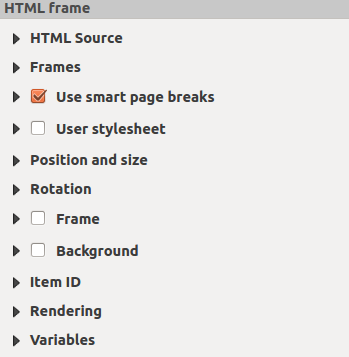
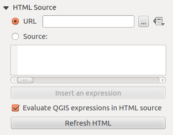
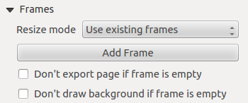
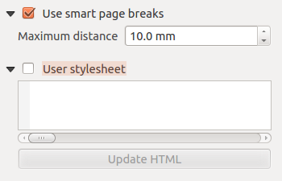

重要
翻訳は あなたが参加できる コミュニティの取り組みです。このページは現在 100.00% 翻訳されています。
18.2.10. HTMLフレームアイテム
ウェブサイトのコンテンツを表示したり、自身で作成しスタイリングしたHTMLページを表示するフレームを追加することができます！  HTMLを追加 を使用して、 アイテムの作成手順 に従うことでHTMLを追加でき、これは レイアウトアイテムの操作 で説明されているものと同様に操作できます。HTMLの縮尺は、HTMLフレームが作成された時点でのレイアウトのエクスポート解像度によって制御されることに留意してください。
HTMLを追加 を使用して、 アイテムの作成手順 に従うことでHTMLを追加でき、これは レイアウトアイテムの操作 で説明されているものと同様に操作できます。HTMLの縮尺は、HTMLフレームが作成された時点でのレイアウトのエクスポート解像度によって制御されることに留意してください。
HTMLアイテムは アイテムプロパティ パネルを使用してカスタマイズすることができます。 アイテムの共通プロパティ の他に、HTMLアイテムには以下の機能があります（ 図 18.62 参照）。

図 18.62 HTMLフレームのアイテムプロパティパネル
18.2.10.1. HTMLソース
HTMLフレームの アイテムプロパティ パネルの HTMLソース グループには、下記の機能があります（ 図 18.63 参照）：

図 18.63 HTMLフレームの HTMLソースプロパティ
URL では、インターネットブラウザからコピーしたウェブページのURLの入力や、 ... ブラウズ ボタンを使用してHTMLファイルの選択ができます。
 データによって定義された上書き ボタンを使用するオプションもあり、テーブルの属性フィールドのコンテンツや、正規表現を使用してURLを指定することができます。
データによって定義された上書き ボタンを使用するオプションもあり、テーブルの属性フィールドのコンテンツや、正規表現を使用してURLを指定することができます。ソース には、テキストボックスにHTMLタグ付きのテキストを入力したり、完全なHTMLページを入力することができます。
式の挿入・編集... ボタンを使用すると、「ソース」テキストボックスに
[%Year($now)%]式を追加して、現在の年を表示させるようなことができます。このボタンは、ラジオボタンの ソース が選択されている場合のみ有効です。式を入力したら、HTMLフレームが更新される前にテキストボックス内のどこかをクリックしてください。そうしないと、式が失われてしまいます。 HTMLソース内のQGIS式の評価 にチェックを入れると、ソース内に含まれるQGIS式の評価結果が表示されます。チェックを入れない場合には、結果の代わりに式そのものが表示されます。
HTMLソース内のQGIS式の評価 にチェックを入れると、ソース内に含まれるQGIS式の評価結果が表示されます。チェックを入れない場合には、結果の代わりに式そのものが表示されます。HTMLのリフレッシュ ボタンを使用すると、HTMLフレームが更新され、変更した結果が表示されます。
18.2.10.2. フレーム
HTMLフレームの アイテムプロパティ パネルの フレーム グループには、下記の機能があります（ 図 18.64 参照）：

図 18.64 HTMLフレームのフレームプロパティ
リサイズモード を使用して、HTMLコンテンツをどのようにレンダリングするかを選択できます。
既存フレームを利用は、最初のフレームと追加されたフレームのみにテーブルを表示します。次のページへ拡張は、ウェブページの長さを表示するのに必要な数のフレーム（とそれに対応するページ）を作成します。各フレームは、レイアウト上で移動させることができます。フレームのサイズを変更した場合には、ウェブページは別のフレームに分割されます。最後のフレームはウェブページに合わせてトリミングされます。各ページで繰り返すは、各ページで同じサイズのフレームで、ウェブページの左上部分を繰り返しレンダリングします。終了まで繰り返すは、次のページへ拡張オプションと同様に必要なだけフレームを作成しますが、全てのフレームが同じサイズとなります。
フレームを追加 ボタンを使用して、選択したフレームと同じサイズのフレームを追加できます。 リサイズモード で 既存フレームを利用 を使用している場合には、HTMLページが最初のフレームに収まらない場合、次のフレームに続きが表示されます。
- フレームの内容が無い場合はページをエクスポートしない を有効化すると、HTMLコンテンツが無い場合には、ページはエクスポートされません。これにより、その他すべてのレイアウトアイテム、地図、スケールバー、凡例なども結果に表示されなくなります。
- フレームが空の場合、背景を描画しない を有効化すると、HTMLフレームが空の場合には、HTMLフレームが描画されません。
18.2.10.3. スマートページブレークとユーザスタイルシートの使用
HTMLフレームの アイテムプロパティ パネルの Smart Page Breaksを使う ダイアログと スタイルシートを使用する ダイアログには、下記の機能があります（ 図 18.65 参照）：

図 18.65 HTMLフレームの「Smart Page Breaksを使う」プロパティと「スタイルシートを使用する」プロパティ
- Smart Page Breaksを使う にチェックを入れると、HTMLフレームコンテンツがテキスト行の途中で改ページされるのを防ぎ、次のフレームにスムーズに続くようにします。
HTMLのどこで改ページを行うかを計算する際に許容される 最大距離 を設定します。この距離は、最適な改ページ位置の計算後に、フレームの下部に許される空白の最大量です。より大きな値を設定すると、改ページ位置の選択が柔軟になされますが、フレームの下部に無駄な空白ができやすくなります。これは、 Smart Page Breaksを使う が有効な場合にのみ使用できます。
- スタイルシートを使用する を有効にすると、CSSで指定されるHTMLスタイルを適用することができます。以下に、スタイルコードの例を示します。
<h1>ヘッダタグの色を緑に設定し、パラグラフタグ<p>に含まれるテキストのフォントとフォントサイズを設定するものです。h1 {color: #00ff00; } p {font-family: "Times New Roman", Times, serif; font-size: 20px; }
HTMLの更新 ボタンを使用して、スタイルシートの設定結果を確認できます。